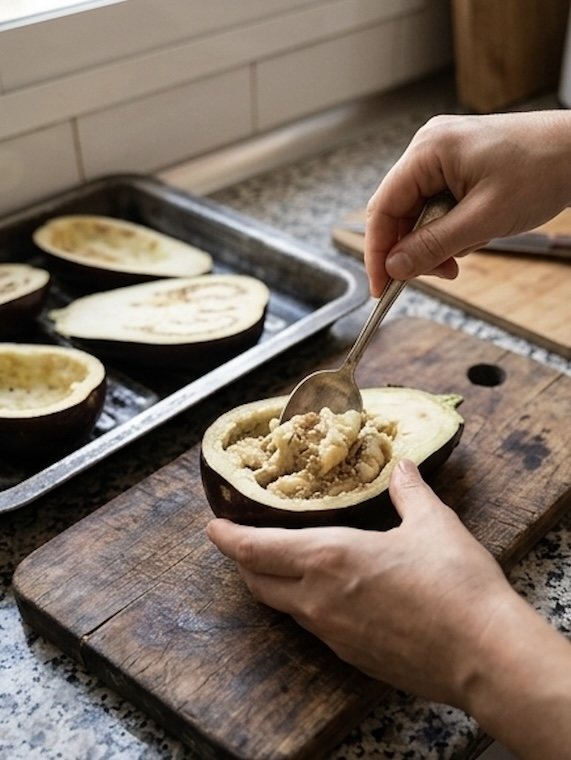
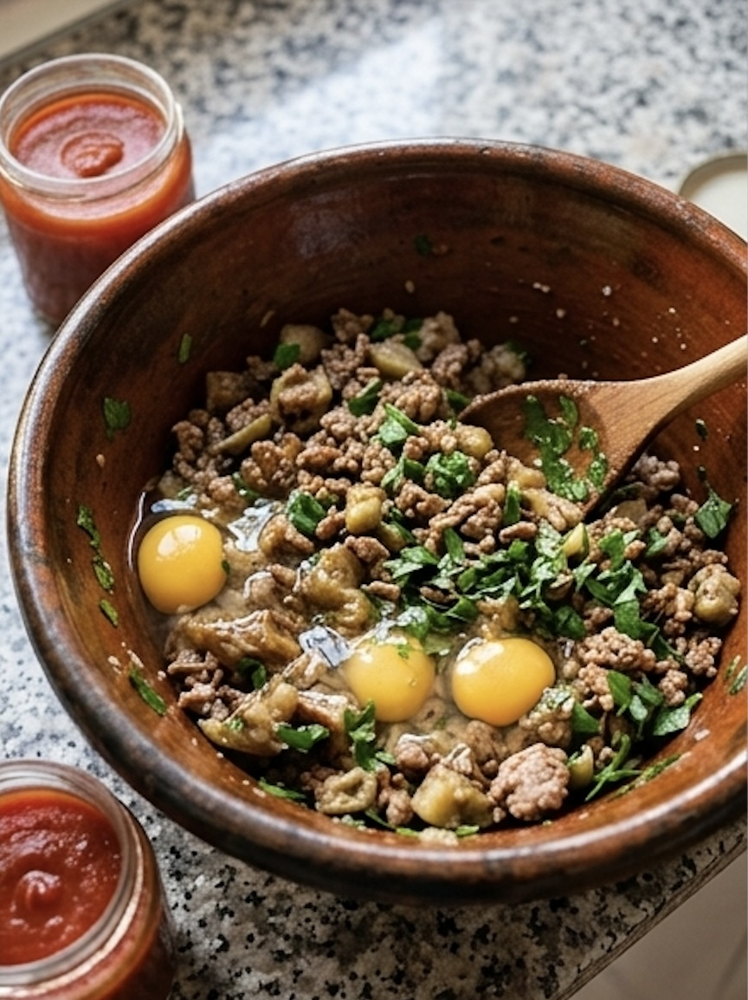
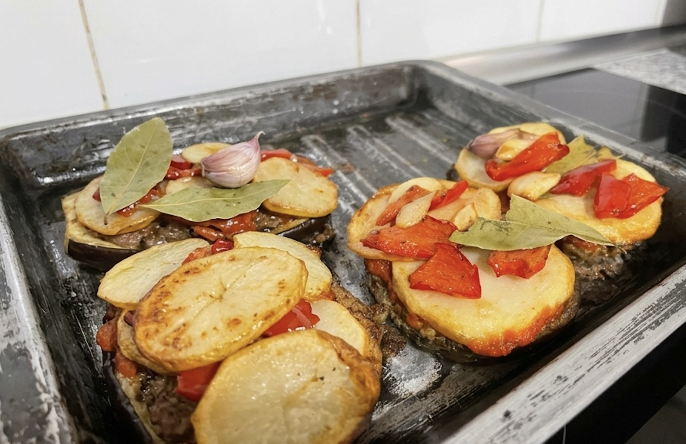

Albergínies farcides a la mallorquina

Ingredients (per a 3-4 persones)
- 5 albergínies mitjanes
- 600-700 g de carn picada (porc, vedella o mescla)
- 2 alls
- Julivert
- Moraduix
- Sal
- Pebre bo
- 2 ous
- Salsa de tomàtiga
- 4 patates grosses
- 1 prebe vermell
- Farina
- Oli d’oliva (i un poc d’oli de gira-sol, si voleu per fregir)
Elaboració
1. Preparar les albergínies
- Tallau les albergínies per la meitat (de llarg) i bulliu-les amb aigua i un poc de sal fins que quedin toves. Colau-les i deixau-les refredar.
- Amb una cullera, buidau la polpa (les llevors millor tirar-les) i triturau la carn amb el túrmix.
2. Fer el farcit
- Mesclau la carn d’albergínia amb la carn picada, l’all i el julivert ben picats, un pessic de moraduix, sal, pebre bo i els dois ous.
- Tapau-ho i deixau-ho reposar a la gelera unes hores (millor d’un dia per l’altre) perquè prengui més gust.
3. Preparar el tumbet
- Tallau el prebe vermell i les patates a rodanxes. Fregiu primer el prebe en oli (pot ser mescla d’oliva suau i gira-sol), i reservau-lo.
- Fregiu després les patates fins que siguin daurades i toves, i també reservau-les.
- Si feis salsa de tomàtiga casolana, sofregiu alls picats amb oli d’oliva, afegiu tomàtiga triturada, un full de llorer i un polsim de sal, i deixau-ho coure fins que espesseixi.
4. Muntar i fregir les albergínies
- Ompliu les meitats d’albergínia amb la mescla de carn.
- Passau només la part de la carn per farina.
- Fregiu-les a foc mitjà: primer per la part de la pell (punxau un poc la carn abans de girar-les perquè no rebentin), i després girau-les i deixau-les uns 10 minuts per l’altra banda, fins que siguin ben cuites.
5. Servir
- Posau les albergínies a una safata, i damunt (o al costat) feis una capa de tumbet amb les patates, el prebe i la salsa.





